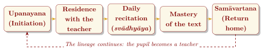
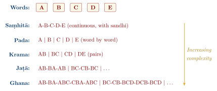

Chapter 11: The Oral Tradition: Śruti, Pāṭha, and the Art of Preservation¶
Invocatory Verse
yad eṣām anyo anyasya vācaṃ
śāktasyeva vadati śikṣamāṇaḥ
When one of them repeats the speech of the other,
as a pupil repeats his teacher’s…
— Ṛgveda 7.103.5 (the hymn of the frogs)
11.1 Introduction: Oral Transmission¶
For most of their history the Vedic texts were preserved not in writing but by oral transmission from teacher to pupil, over some three thousand years. The name śruti, “what is heard”, is literal. In the Ṛgveda’s humorous hymn to the frogs (RV 7.103), the croaking of frogs at the start of the rains is compared to pupils repeating their teacher’s words—a glimpse of Vedic schooling already in the oldest text.
Writing came late to India. Apart from the undeciphered Harappan script, the earliest Indian writing is in the Brāhmī and Kharoṣṭhī scripts of the inscriptions of Aśoka (3rd century BCE), long after the Vedic texts were composed. When writing did come into use, the Vedic schools continued to treat oral learning as primary.
The fidelity of this transmission is well documented. The Ṛgveda is recited today, across India, in a form that agrees almost syllable for syllable, and accent for accent, with the oldest manuscripts and with the analysis of the Prātiśākhyas composed more than two thousand years ago. Linguists rely on it as a faithful record of a language spoken in the second millennium BCE (Staal 1986; Witzel 1997).
Vedic Oral Transmission in Brief
-
The Vedas were transmitted orally for well over two thousand years before manuscripts were made, and orally alongside manuscripts ever since.
-
The Ṛgveda alone has over 10,500 verses, all memorised with their accents.
-
Several recitation methods (pāṭhas) provide cross-checks against error.
-
The tradition of Vedic chanting was proclaimed a Masterpiece of the Oral and Intangible Heritage of Humanity by UNESCO in 2003 and inscribed on the Representative List in 2008.
11.2 The Guru–Śiṣya Paramparā¶
The foundation of Vedic transmission is the teacher–pupil lineage (guru–śiṣya paramparā). In the classical model, set out in the Gṛhya and Dharma Sūtras, it proceeds through several stages:
-
Upanayana — initiation, in the classical law books at age 8 for a Brahmin, 11 for a Kṣatriya and 12 for a Vaiśya;
-
Brahmacarya — studentship, traditionally twelve years or more for one Veda, living in the teacher’s household;
-
Svādhyāya — daily recitation of the text learnt;
-
Samāvartana — the ceremonial return home at the end of study.
This system was also a system of exclusion. Initiation, and therefore Vedic study, was restricted in the law books to boys of the three upper varṇas; Śūdras were forbidden even to hear the Veda, and women’s initiation, if it ever existed, had disappeared by the time of the Dharma Sūtras. In practice Vedic learning became concentrated in Brahmin families. In recent times some institutions have opened Vedic instruction to girls and to students of all backgrounds, a change that remains contested within the tradition (Figure 11.1).

11.3 The Pāṭha System: Methods of Recitation¶
The best-known technique of Vedic preservation is the system of recitation methods (pāṭhas), in which the words of a text are recited in different orders and combinations.
11.3.1 The Natural Recitations (Prakṛtipāṭhas)¶
-
Saṃhitā pāṭha — the continuous text, with the sound changes (sandhi) between words applied.
-
Pada pāṭha — the text word by word, with sandhi undone and compounds divided; for the Ṛgveda this analysis is ascribed to Śākalya. It amounts to a grammatical analysis of the whole text.
-
Krama pāṭha — consecutive pairs of words: 1–2, 2–3, 3–4, and so on.
11.3.2 The Modified Recitations (Vikṛtipāṭhas)¶
Eight more complex “modified” recitations are traditionally listed: jaṭā, mālā, śikhā, rekhā, dhvaja, daṇḍa, ratha and ghana. The best known are:
-
Jaṭā (“braid”): 1–2, 2–1, 1–2; 2–3, 3–2, 2–3; …
-
Śikhā (“crest”): 1–2, 2–1, 1–2–3; 2–3, 3–2, 2–3–4; …
-
Ghana (“dense”): 1–2, 2–1, 1–2–3, 3–2–1, 1–2–3; 2–3, 3–2, 2–3–4, 4–3–2, 2–3–4; …
The other patterns vary in detail between traditions. Few reciters today master the full set; a reciter who has learnt the ghana of a Veda is honoured with the title ghanapāṭhin (Figure 11.2).

Note: Why the Pāṭhas Work
Each recitation preserves the same words in a different arrangement. The word-by-word text fixes the form of every word; the pair-wise and braided recitations fix their order and the sandhi between them; and because the sandhi must be applied anew in each arrangement, an error introduced in one would clash with the others. Modern writers sometimes compare this redundancy with error-detecting methods in information technology. The comparison is a useful analogy for the principle of cross-checking, but the pāṭhas are a memory discipline, not a mathematical theory of codes.
11.4 The Accent (Svara)¶
Every syllable of the Ṛgveda, and of most other Vedic texts, carries an inherited pitch accent, and reciters preserve it exactly. The tradition distinguishes three accents (Table 11.1):
| Svara | Pitch | Description |
|---|---|---|
| Udātta | Raised | The accented syllable of a word |
| Anudātta | Not raised | Low syllables, especially the one preceding an udātta |
| Svarita | Falling | The tone that follows an udātta |
In Ṛgveda manuscripts the anudātta is marked by a line beneath the syllable and the svarita by a vertical stroke above, while the udātta is left unmarked (Figure 2.2 shows these marks in red); other schools use other systems. Western editions write the udātta with an acute accent instead. The first verse of the Ṛgveda, in its continuous (saṃhitā) and word-by-word (pada) forms, then reads:
| Saṃhitā: | agním īḷe puróhitaṃ yajñásya devám ṛtvíjam hótāraṃ ratnadh\(\acute{\bar{ a}}\)tamam |
| Pada: | agnim īḷe puraḥ-hitam yajñasya devam ṛtvijam hotāram ratna-dhātamam (accents not shown) |
Each acute marks the raised syllable of a word; the syllable that follows it is the falling svarita, and unaccented syllables are in principle low. The verb īḷe, “I praise”, has no accent, as finite verbs in a main clause normally have none. In the pada text the compounds purohita and ratnadhātama are divided into their members, and the sandhi of the continuous text is undone. In recitation the accents are accompanied by hand and head movements that help the reciter keep them correct. The Vedic accent is also of great importance for historical linguistics, since it continues the accent of Proto-Indo-European.
11.5 The Vedic Pāṭhaśālās¶
Vedic schools (pāṭhaśālās) continue to operate across India, though their number is small and many struggle for support. A typical day includes early-morning recitation; the learning of new material, in which the teacher recites a passage and the pupils repeat it many times; revision of earlier lessons; group recitation; individual testing by the teacher; and evening revision.
11.6 Why Were the Vedas Not Written Down?¶
Several reasons combined:
-
Historical: the Vedic texts were composed before writing was in use in India, and their schools developed oral methods that worked.
-
The primacy of sound: the power of a mantra was thought to lie in its exact pronunciation, including accent and quantity, which early scripts did not record well.
-
Control of sacred knowledge: oral teaching kept the Veda within initiated lineages. Later texts condemn those who sell or write the Veda.
-
The teacher–pupil relationship: learning was understood as a personal transmission, not merely a transfer of information.
11.7 The Transition to Writing¶
The Vedas were eventually written down, though when this began is uncertain. Because of the Indian climate, the oldest surviving Vedic manuscripts date only from about the eleventh century CE, though copying certainly began earlier. Even after the adoption of writing, oral instruction remained primary, and manuscripts were aids to it.
11.8 Modern Preservation Efforts¶
-
Government support: the Maharshi Sandipani Rashtriya Veda Vidya Pratishthan (Ujjain) and state bodies support Vedic schools and teachers.
-
Recording: systematic audio and video recording of master reciters by research institutes and private foundations.
-
UNESCO recognition: since 2003/2008, as noted above.
-
Digital editions: searchable digital texts of most Vedic works are now available.
-
Religious institutions: maṭhas, temples and trusts support Vedic education.
11.9 Memory and the Brain¶
How do reciters memorise so much so accurately? The answer lies partly in the methods themselves, which use well-known principles of memory:
Principles at Work in Vedic Memorisation
-
Multi-sensory learning: hearing, speaking, accent and hand movements combine;
-
Repetition spaced over years: daily revision of everything learnt;
-
Elaboration: the pāṭhas force the learner to process each word in many contexts;
-
Early and intensive training: learning begins in childhood and fills most of the day;
-
Social checking: group recitation and the teacher’s correction catch errors.
Scholarly Note: A Brain-Imaging Study of Vedic Reciters
Hartzell and colleagues compared magnetic resonance images of the brains of 21 professional reciters (paṇḍits) trained in the White Yajurveda with those of matched controls (Hartzell et al. 2016). The reciters showed greater grey-matter density and cortical thickness in several regions associated with language and memory, including parts of the right temporal lobe and the hippocampus. Because the study compares two groups at one point in time, it cannot by itself show that recitation caused the differences, but it is consistent with the view that long, intensive memory training shapes brain structure.
11.10 Summary¶
The Vedic oral tradition shows that a large literature can be preserved, with its sounds and accents, for three thousand years without depending on writing, provided that a society is willing to invest in it: in the years of training each reciter receives, in methods such as the pāṭhas that make errors detectable, and in the families and patrons who sustain the schools. The same investment explains the tradition’s limits. Because it was confined to initiated men of particular families, it preserved the text with great fidelity but kept it from most of the society around it; its future now depends both on continued support and on wider access.
Closing Invocation
svādhyāyān mā pramadaḥ
ācāryāya priyaṃ dhanam āhṛtya
prajātantuṃ mā vyavacchetsīḥ
Do not neglect your daily recitation.
Having brought your teacher the gift he desires,
do not cut off the line of offspring.
— Taittirīya Upaniṣad 1.11.1